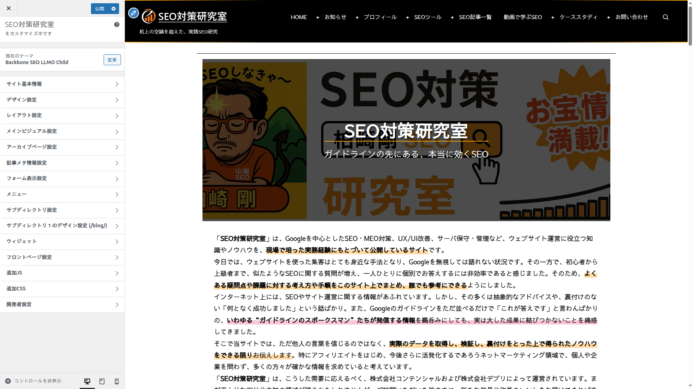

インストール・初期設定
テーマのインストールから初期設定まで、ステップバイステップで解説します。
インストール方法
テーマファイルをアップロード
テーマのZIPファイルを WordPress管理画面の「外観」→「テーマ」→「新しいテーマを追加」→「テーマのアップロード」からアップロードします。または、解凍したフォルダを /wp-content/themes/backbone-seo-llmo/ に直接配置します。
テーマを有効化
「外観」→「テーマ」一覧から「Backbone Theme for SEO + LLMO」を見つけ、「有効化」ボタンをクリックします。
カスタマイザーを開く
「外観」→「カスタマイズ」をクリックすると、テーマのカスタマイザーが開きます。ここからすべての設定を行います。
テーマを有効化すると、カスタマイザーに「デザイン設定」「レイアウト設定」「メインビジュアル設定」など、テーマ固有のセクションが追加されます。
テーマが有効化する機能
テーマを有効化すると、以下のWordPress標準機能が自動的に有効になります。
| 機能 | 詳細 |
|---|---|
| アイキャッチ画像 | 推奨サイズ 1200×800px。メインビジュアルやアーカイブ一覧で使用されます |
| カスタムロゴ | 推奨サイズ 400×100px（最大幅400px / 最大高100px）。ヘッダーに表示されます |
| HTML5マークアップ | 検索フォーム、コメントフォーム、コメントリスト、ギャラリー、キャプションにHTML5タグを使用 |
| エディタースタイル | ブロックエディターにテーマのスタイルを反映し、編集画面とフロントエンドの見た目を統一 |
| 幅広/全幅ブロック | align-wide・align-full ブロックに対応 |
| レスポンシブ埋め込み | YouTube・Twitter等の埋め込みを自動的にレスポンシブ化 |
| 固定ページのタグ対応 | 固定ページ（page）にタグを付与可能。タグアーカイブに固定ページも表示されます |
| 固定ページの抜粋対応 | 固定ページで抜粋メタボックスが有効に。メタディスクリプション自動生成にも利用されます |
| タイトルセパレーター | ページタイトルのセパレーターをWordPress標準の「–」から「|」に変更 |
テーマはWordPressのcustom-background機能を無効化しています。背景色の変更はカラーテーマまたは独自カラーテーマの --background-color で行ってください。
推奨画像サイズ
| 用途 | 推奨サイズ | 備考 |
|---|---|---|
| アイキャッチ画像 | 1200×800px | メインビジュアル・アーカイブカード・SNS共有で使用 |
| カスタムロゴ | 400×100px以内 | 最大幅400px / 最大高100px。SVGは非対応 |
| フロントページヒーロー | 1920×800px以上 | 画面幅に応じて自動リサイズ。高さは200〜800pxで設定可能 |
| サブディレクトリ別ロゴ | 400×100px以内 | カスタムロゴと同じサイズ推奨 |
| デフォルトアイキャッチ | 1200×800px | アイキャッチ未設定時のフォールバック画像 |
カスタマイザーの構成

テーマのカスタマイザーには以下のセクションがあります。各セクションの詳細は該当するマニュアルページで解説しています。
| セクション名 | 内容 | 詳細ページ |
|---|---|---|
| サイト基本情報 | サイト名、キャッチフレーズ、ロゴ画像、サイトアイコン、ヘッダーメッセージ、フッターメッセージ、コピーライト表示 | - |
| デザイン設定 | カラーテーマ（44種）、デザインパターン、タイポグラフィパターン、デコレーションパターン、デフォルトアイキャッチ画像 | レイアウトとデザイン |
| 独自カラーテーマの設定 | 21のCSS変数を個別にカスタマイズ（プライマリ、背景、テキスト、リンク、ボタン、フォーム等） | レイアウトとデザイン |
| レイアウト設定 | カラム数（1/2/3/フルワイド）、サイドバー位置・幅、1カラム最大幅、投稿タイプ別レイアウト、スティッキーヘッダー/サイドバー、スクロールトップ、検索ボタン、フッター設定 | レイアウトとデザイン |
| メニュー | ナビゲーションメニュー設定、深階層サブメニューの展開方向（横/縦）、モバイルメニュー非表示ブレークポイント | レイアウトとデザイン |
| サブディレクトリ別ロゴ | 最大10個のサブディレクトリに個別ロゴ画像またはテキストロゴを設定 | レイアウトとデザイン |
| サブディレクトリ別デザイン | サブディレクトリごとにカラーテーマ・デザイン・タイポグラフィ・デコレーションパターンを個別設定 | レイアウトとデザイン |
| メインビジュアル設定 | 表示スタイル（4種）、ボーダー・角丸・アニメーション・配置、共通/個別モード、オーバーレイ | コンテンツ表示 |
| アーカイブページ設定 | グリッドカラム数・並び順・サムネイルサイズ・表示要素、共通/個別モード（カテゴリ・タグ・著者・日付・検索・CPT別） | コンテンツ表示 |
| 記事メタ情報設定 | 投稿日・更新日・著者・カテゴリ・タグの表示/非表示、タグ表示上限数、SEOメタタグ（ディスクリプション/キーワード）有効/無効、共通/個別モード | コンテンツ表示 |
| フォーム表示設定 | パディング（縦/横）、フォントサイズ、ボーダー幅、行間、下マージン、テキストエリア最小高、最大幅 | レイアウトとデザイン |
| フロントページ設定 | カスタムフロントページ/既存ページ選択、ヒーロー画像・テキスト、リストセクション5枠＋個別セクション5枠＋フリーコンテンツ、セクション順序（D&D） | コンテンツ表示 |
| 追加JS | カスタムJavaScriptの注入。全体共通＋投稿タイプ別、header/footer選択 | SEOとLLMO |
| 追加CSS | カスタムCSSの注入。全体共通＋投稿タイプ別、header/footer選択 | SEOとLLMO |
| 開発者設定 | キャッシュバスティング（フロントエンド/管理画面の個別ON/OFF） | SEOとLLMO |

内部アーキテクチャ
テーマは以下の4層構造で設計されています。各層が独立して機能し、カスタマイザーの設定がリアルタイムにフロントエンドに反映される仕組みです。
| 層 | 役割 | 主要ファイル |
|---|---|---|
| テンプレート層 | HTMLの出力構造を決定。ヘッダー・フッター・サイドバー・記事カード・ヒーロー画像等のテンプレートパーツ | template-parts/, header.php, footer.php |
| 設定層 | カスタマイザーの全セクション・コントロール・設定値を管理。カスタムコントロール（リピーター、WYSIWYG、セクション順序、検索可能セレクト等）も含む | inc/customizer/ |
| ユーティリティ層 | メタディスクリプション生成、ヒーロー画像制御、レイアウト判定、カラーテーマCSS生成等のヘルパー関数群 | inc/utilities/ |
| アセット層 | CSS（レイアウト、コンポーネント、レスポンシブ等27ファイル）とJS（カスタマイザープレビュー、検索ポップアップ等17ファイル） | css/, js/ |
初期設定の流れ
カラーテーマを選択
「デザイン設定」→「カラーテーマ」から44種類のプリセットテーマを選択します。天体名をモチーフにした22種（各ライト/ダーク）が用意されています。「設定なし」を選ぶと独自カラーテーマモードが有効になり、21のCSS変数を個別に調整できます。
レイアウトを設定
「レイアウト設定」からフロントページのカラム数（1カラム/2カラム/3カラム/フルワイド）とサイドバー位置（左/右）を設定します。サイドバー幅（200〜500px、デフォルト300px）、1カラム時のコンテンツ最大幅（600〜1920px、デフォルト1200px）も調整可能です。投稿タイプごとに個別レイアウトも指定でき、「継承」を選ぶとフロントページの設定が適用されます。
ロゴとサイト情報を設定
「サイト基本情報」でサイト名、キャッチフレーズ、ロゴ画像（推奨400×100px）、サイトアイコンを設定します。ヘッダーメッセージ（HTMLタグ可）やフッターメッセージ、コピーライト表示（テキスト変更可・表示/非表示切替）も入力できます。
フロントページを設定
「フロントページ設定」で「カスタムフロントページを使用」か「既存のページを使用」を選択します。カスタムフロントページでは、ヒーロー画像・テキスト・リストセクション・個別セクション・フリーコンテンツを組み合わせてトップページを構築できます。
メインビジュアルを設定
「メインビジュアル設定」でアイキャッチ画像の表示スタイルを選択します。「共通設定」モードなら全投稿タイプ統一、「個別設定」モードなら投稿タイプごとにスタイル・ボーダー・角丸・アニメーション・配置を設定できます。
SEO設定を確認
「記事メタ情報設定」セクションで、メタディスクリプション自動生成とメタキーワード自動生成がデフォルトで有効になっていることを確認します。SEOプラグインを使用する場合は、重複を避けるためにテーマのメタ出力を無効化することも可能です。
すべての設定はカスタマイザーのプレビューでリアルタイムに確認できます。「公開」ボタンを押すまで変更は反映されません。